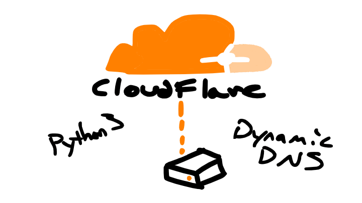
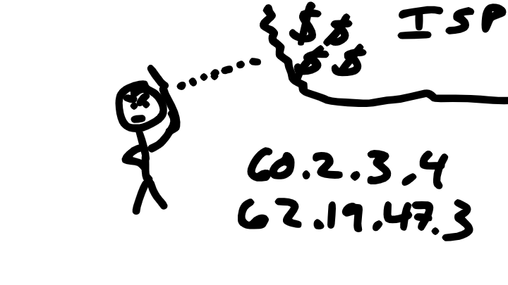
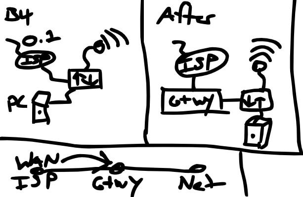

Home DynamicDNS with CloudFlare Free and Python3

I recently setup a new home linux router. One benefit is I now have direct access to the heart of my home network. Including a direct interface to the internet. Here's how I utilized that access and opened a consistent DNS domain to my home network without having to use DynDNS or get a business internet account.
Rant or skip to the setup
I have always been upset about how my local ISP doesn't allow static IP addresses on residential accounts. They even charge $200+ for an equivalent speed business account. So I wasn't going down that road. The reason these ISP's don't give you a static IP is that they discourage hosting services becuase the bandwidth is so asymmetrical. You can't really host a real website because you'll be choking up all the "shared" tenants on their oversubscribed links.
This is a real problem for ISP's because there are a whole lot more "subscribers" than "publishers" and equivalent uplink bandwidth to all customers so anyone can choose to be a "publisher" on a whim is a math problem in itself.

That being said the issue is exacerbated by ISP's having neglected the US Network infrastructure and allowing it to fall behind the rest of the world. Mostly this is because of the ever centralizing monopolization of the ISP business remember the Bells? well history is repeating itself again.
The Setup
The primary issue with hosting services from your home, aside from the bandwidth limitation we discussed before, is that your IP Address is dynamic. That is it changes periodically disturbing the DNS records necessary to locate your place on the internet.
A common way of mitigating this are Dynamic DNS services like DynDNS. They usually come as built in clients on Camera DVR systems and the like. Although you can download clients for your computer there are two things I really hate about this.
1). It's usually not for free and if it is you have to use their vanity url. Example: customer123@dyndns.com. Yuck!
2). And you have to download some crappy middleware client.
Here's a really crappy network diagram of how I pushed control of my WAN connection from the customer ISP equipment to my Linux Router. Having this "shim" where I can run scripts, control routes, and host services like DHCP, DNS really make for a much more flexible network environment for my home.

What I needed was fairly simple.
- Find out what my current IP Address is.
- Tell the Internet's what my IP Address is.
It would be very easy for a DNS provider to build a client for this functionality. I haven't heard of one doing so my assumption being that it would increase demand on their infrastructure far beyond what they currently support. Primarily DNS changes on your registrar occur when you're making major site or service changes. A Dynamic DNS system needs to update at least as frequently as your home IP Address.
Building a script to handle this using std libs in Python was fairly easy. It allowed me to know I don't need to scan for third party vulnerabilities and introduce the difficulty of installing them when I want to setup something new.
Here's a link to the script posted on github.
Note: You will need a CloudFlare account which for Hobbyists/Home users is free! You need to point your domain's nameservers to cloudflare, generate an API Token, and input your details into the configuration file.
I actually built it using VSCode's Remote SSH feature and turned it into a Systemd Service with a Timer. The script runs on a schedule, sends stderr and stdout logs to journalctl for debugging, and includes an installer script for easy setup.
Just clone the repo, tweak the configuration file, run the installer, and voila!
Unfortunately this isn't working on Windows yet but I might find some time to try to get it working.